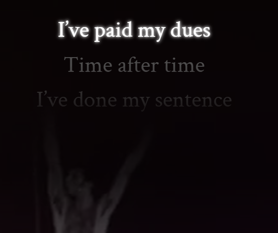

Can AI tell you if you sing like Freddie Mercury?

People love singing along with Freddie Mercury. The real question is whether you can sing like him too, or if your confidence is doing most of the work. To celebrate “Bohemian Rhapsody” hitting one billion views on YouTube — and Freddie’s birthday — Google introduced FreddieMeter, a small experiment that asks you to pick a Queen song, sing for about twenty seconds, and let an algorithm politely tell you how close you get to one of the greatest vocalists of all time.
The idea is simple and slightly dangerous. You sing into your device, and FreddieMeter analyzes your tone, pitch, and melody to see how closely they align with Freddie’s vocal style. It’s not a talent show, and it’s definitely not a career review — just a quick comparison that will either boost your ego or gently remind you that Freddie Mercury was, in fact, very good at this. The scoring is intentionally framed as an experiment, which feels like a polite way of saying, “Please don’t argue with the computer.”
Under the hood, FreddieMeter uses on-device machine learning models developed by Google Research, meaning your singing never leaves your phone. No uploads, no servers, no permanent record of that high note you thought you nailed. The project was built in partnership with The Mercury Phoenix Trust, a charity founded by Brian May, Roger Taylor, and Jim Beach to honor Freddie’s legacy and support HIV/AIDS initiatives worldwide. So yes, it’s a fun, slightly humbling AI toy — but it’s also doing something genuinely good while reminding you that singing like Freddie Mercury is harder than it looks. If you’re brave enough, you can try it here: freddiemeter.withyoutube.com